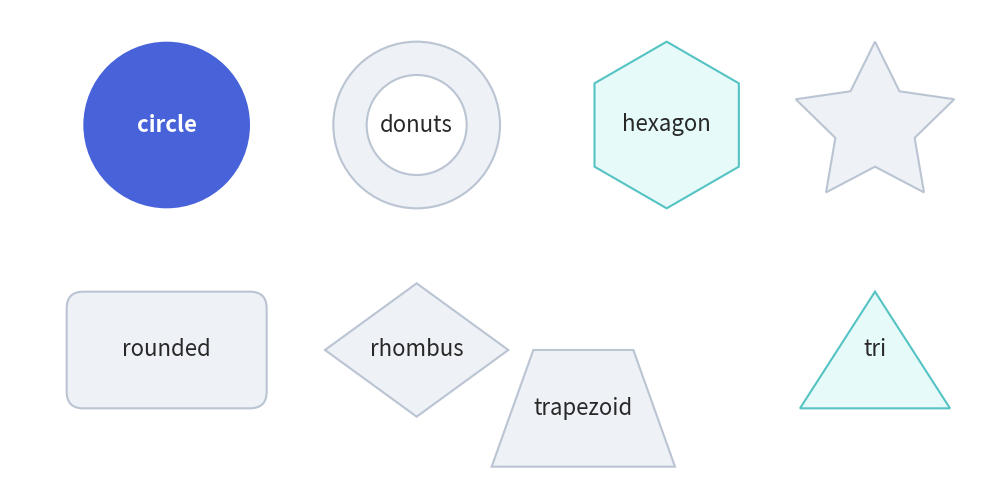
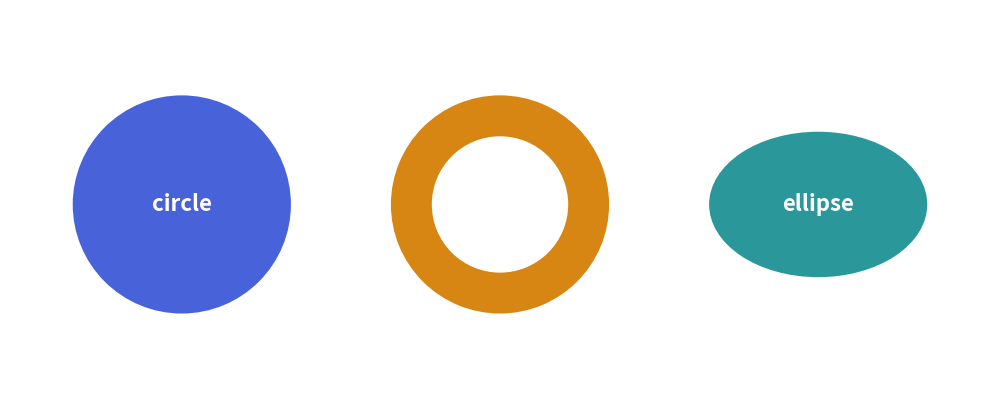
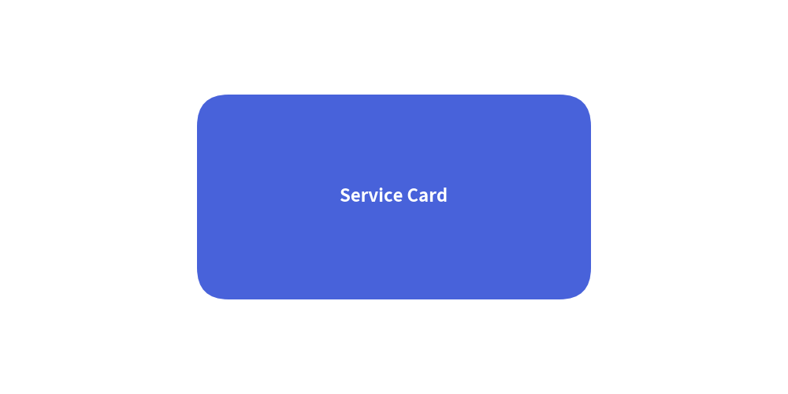
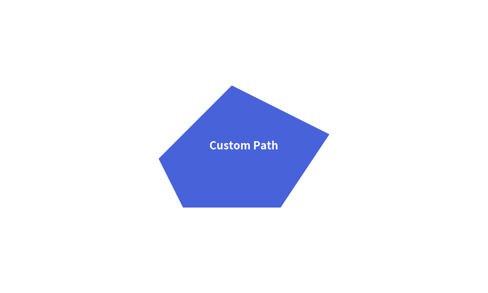

Vector Shapes
Drawlib provides a rich suite of vector shape primitives designed for technical illustrations. Unlike low-level canvas libraries where shapes must be constructed from complex Bézier paths, Drawlib shapes are defined declaratively with intuitive geometric arguments, built-in center labels, and unified styling.
1. Common Shape Parameters
All shape primitives share consistent keyword arguments:
| Parameter | Type | Default | Description |
|---|---|---|---|
xy |
tuple[float, float] |
Required | Coordinate anchor point (x, y) (geometric center for most shapes). |
style |
Style |
Required | Visual style defining fill color, border line style, and border width. |
text |
str |
"" |
Embedded text label centered inside the shape. |
textstyle |
Style |
None |
Text styling (color, font, weight). Defaults to active theme text style. |
textsize |
float |
None |
Font size of the embedded label in points. |
angle |
float |
0.0 |
Rotation angle in degrees (counter-clockwise). |
2. Showcase of Core Primitives

3. Circle-like & Radial Shapes
Drawlib provides a suite of radial geometries centered at xy:
from drawlib.canvas import save, setup
from drawlib.shapes import circle, donuts, ellipse
from drawlib.styles import Styles
setup(width=110, height=45)
circle((20, 22.5), radius=12, style=Styles.PrimaryFlat, text="circle", textstyle=Styles.WhiteBold)
donuts((55, 22.5), radius=12, width=4.5, style=Styles.AccentFlat, text="donuts", textstyle=Styles.WhiteBold)
ellipse((90, 22.5), width=24, height=16, style=Styles.SecondaryFlat, text="ellipse", textstyle=Styles.WhiteBold)
save()

circle(xy, radius, ...): Draws a standard circle centered atxy.donuts(xy, radius, width, ...): Draws a concentric ring with an outerradiusand wall thicknesswidth.ellipse(xy, width, height, angle=0.0, ...): Draws an oval / ellipse with independent dimensions.fan(xy, radius, angle_start, angle_end, ...): Draws a circular pie sector bounded by angles.wedge(xy, radius, width, angle_start, angle_end, ...): Draws an angular donut slice.
4. Rectangular & Planar Polygons
rectangle(xy, width, height, r=0.0, angle=0.0, ...)
Draws a rectangle centered at xy.
- Set
rto create smooth rounded corners (e.g.,r=4.0). - Use
angleto rotate around the geometric center.
from drawlib.canvas import save, setup
from drawlib.shapes import rectangle
from drawlib.styles import Styles
setup(width=100, height=50)
rectangle((50, 25), width=50, height=26, r=4, style=Styles.PrimaryFlat, text="Service Card", textstyle=Styles.WhiteBold)
save()

rhombus(xy, width, height, ...): Symmetric diamond centered atxy(common for decision gates).triangle(xy, width, height, angle=0.0, ...): Isosceles triangle pointing upwards (or rotated).trapezoid(xy, height, bottomedge_width, topedge_width, ...): Symmetrical or skewed trapezoid.regularpolygon(xy, radius, num_vertex, angle=0.0, ...): Equilateral polygon ($N$ vertices).star(xy, num_vertex, radius_ext, radius_int, angle=0.0, ...): Symmetrical multi-pointed star.polygon(points, ...): Arbitrary closed polygon from coordinate list[(x1, y1), (x2, y2), ...].
5. Custom Vector Shapes (shape)
For irregular geometries that do not match predefined primitives, shape allows you to construct custom vector polygons using local path coordinates:
from drawlib.canvas import save, setup
from drawlib.shapes import shape
from drawlib.styles import Styles
setup(width=100, height=60)
# Anchor at (50, 30), define local vertices relative to anchor
shape(
(50, 30),
path_points=[(0, 0), (20, 0), (30, 15), (10, 25), (-5, 10)],
style=Styles.PrimaryFlat,
text="Custom Path",
textstyle=Styles.WhiteBold,
)
save()

[!TIP] For directed arrows (straight, right-angled, U-turn, arc, and chevron arrows), see Block Arrows.